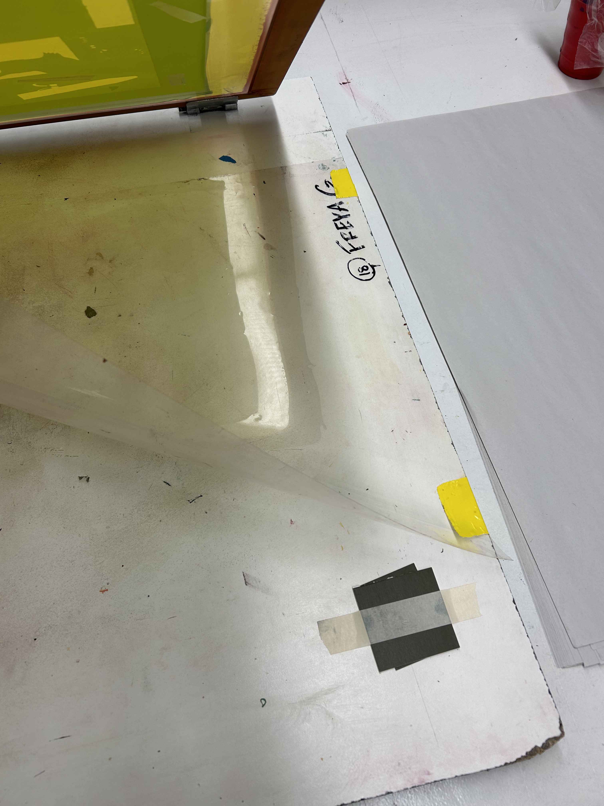
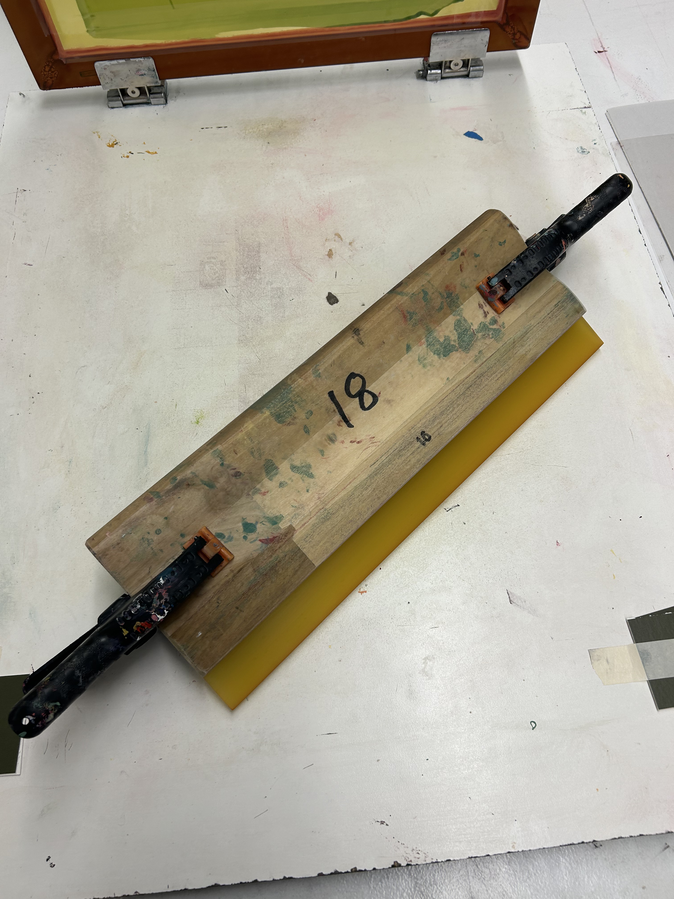
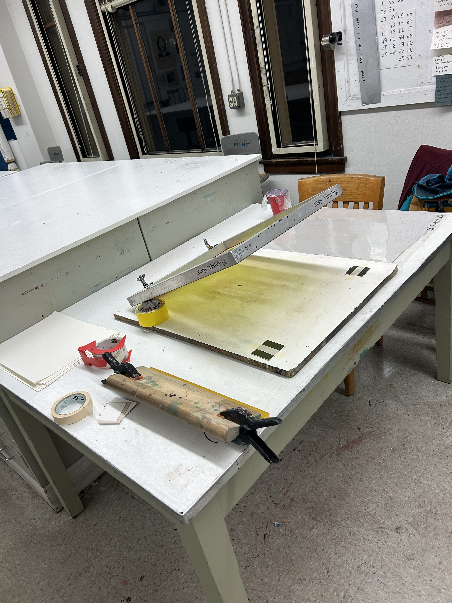

Step 1. Prepare your workspace
Before you start printing, you are going to want to prepare your workspace.
- Find a table that is about your waist height. This is just for your comfort and to get proper leverage as you print. Place one of the printing rigs on the table.
- Use clear packing tape to tape the edges of your screen. There will be gaps between the frame of the screen and the photo emulsion. Tape these so the ink will not get through while you print.
- Attach the screen to the rig. Make sure it is tight enough that your screen will not wiggle while you print.
- Use your duct tape to tape your sheet of mylar to the printing rig. Tape just one edge (left or right, not the top or bottom). This will be used for registration.
- Grab your ink, a stack of newsprint, and a handful of mat chips from the back of the shop. Mix ink colors as necessary.
- Use masking tape to tape two mat chips on each of the near corners of your screen. This will lift your screen slightly off the base of the rig.
- Grab two clamps and put them on both ends of your squeegee. This will prevent your squeegee from dropping down into the ink as you print.
- Set your stack of paper that you will be printing on nearby. Make sure it is cut down roughly to size. You can cut it down further after printing. Having your paper all the same size will help with registration, but it can, and often should, be slightly bigger than you will want it at the end.
- You are now ready to begin printing.


